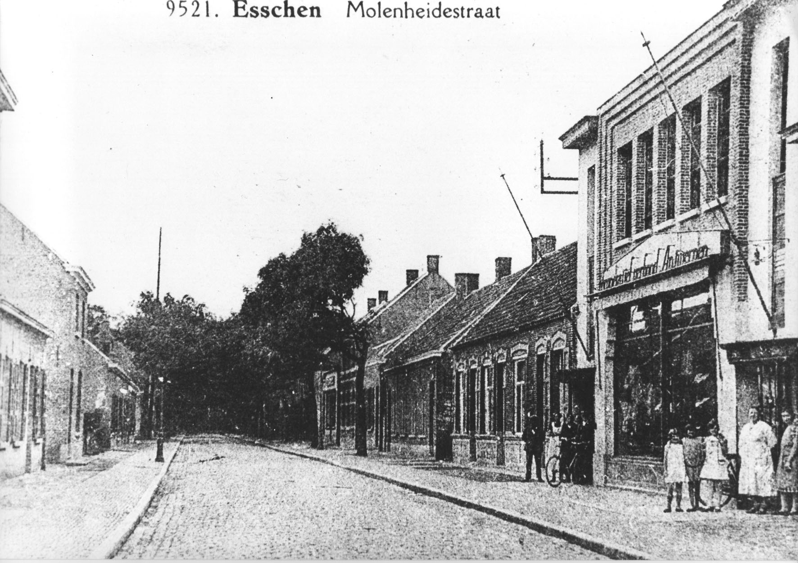
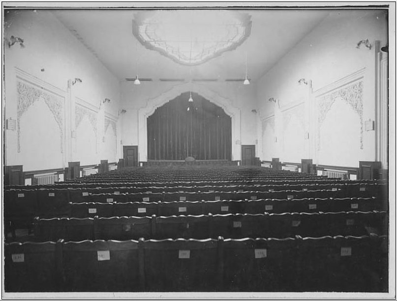
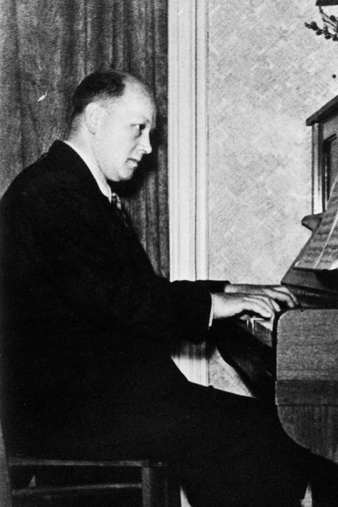

Het Volkshuis
Intussen was men bij de partij op zoek gegaan naar een lokaal en men vindt bij dokwerker Janus Goosen onderdak (grootvader van Roger Goosen) in de Stationsstraat naast de Lunchboetiek.
Met het ontstaan van de partij in 1919 werd ook de Harmonie De Werker opgericht. Deze wordt geboren uit een zangkring onder leiding van de muzikale stationsbediende Octaaf Lauwers. Instrumenten lenen ze van de Verenigde Statievrienden en sommige muzikanten komen over. Met de verkoop van Argentijns vlees wordt de kas aangespekt en de harmonie verwerft zo een eigen instrumentarium. Onder de voorzitters van de harmonie vinden we later ook Sooi terug.
We vinden Sooi Noldus later ook terug als gerant van de Coöperatief. Die werd eerst gehuisvest bij Janus Goosen en nadien verschijnt er een nieuwe winkel met Marie Quick en Anna Coenraads achter de toog. Van 1936 tot 1939 woont Joske Kersters met Sooi en Sylvain op het Molenheike.
 Tesamen met die winkel werd ook zaal Volkshuis gebouwd, de eerste steen wordt gelegd op 1 Mei 1925 en Sooi staat samen met 8 andere kameraden op 9 mei bij notaris Pelgrims om er de stichtingsakte “Het Volkshuis” te laten registreren.
Tesamen met die winkel werd ook zaal Volkshuis gebouwd, de eerste steen wordt gelegd op 1 Mei 1925 en Sooi staat samen met 8 andere kameraden op 9 mei bij notaris Pelgrims om er de stichtingsakte “Het Volkshuis” te laten registreren.
De nieuwe zaal biedt tal van mogelijkheden. Voortaan gonst het in de partijafdeling van bedrijvigheid. De toneelkring “Voor en door het Volk” beleeft er hoogdagen. Volle zalen ook voor het kindertoneel, de muziekconcerten, de revues, de zangavonden, de handwerktentoonstellingen en de turndemonstraties.
Sinds 1928 loopt er op zondagnamiddag en zondagavond een filmvoorstelling in het Volkshuis. Sooi Noldus is de filmoperateur, Joske zit aan de kassa en Wim Merks speelt op de piano als begeleiding van de stomme films. ’s Avonds wanneer Sooi thuiskomt staat op de kachel een pannetje met melk dat Joske voor hem had klaargemaakt.
 